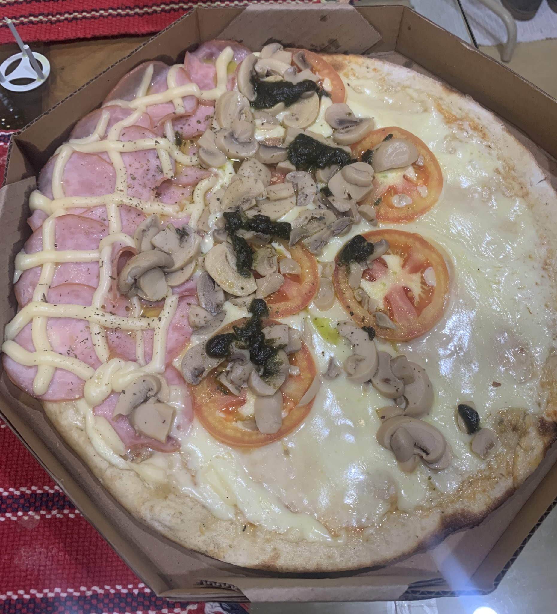

Ingredientes:
Pizza "Demissão Deliciosa"
Ingredientes:
Massa:
- 500g de farinha (a única coisa que nunca vai te demitir)
- 1 colher de sopa de fermento (porque até a massa merece uma chance de crescer)
- 1 colher de chá de açúcar (para adoçar a vida, já que a CLT nem sempre faz isso)
- 300ml de água morna (não quente demais, para não queimar suas esperanças)
- 2 colheres de sopa de azeite (para dar aquela escorregada nos problemas)
Molho:
- 400g de tomate pelado (a única coisa que não se despede sem aviso prévio)
- 1 dente de alho (para dar aquele “tcham” na sua noite)
- Sal e pimenta a gosto (porque, vamos ser sinceros, o trabalho é bem salgado)
Cobertura:
- 200g de queijo muçarela (o conforto que faz você esquecer da sua rotina)
- 100g de azeitonas pretas (um toque de amargura, assim como algumas demissões)
- Presunto ou pepperoni (para dar um gostinho de coisa boa, mesmo quando tudo parece ruim)
- Orégano a gosto (o tempero que sempre deve estar presente, mesmo nas piores situações)
Instruções:
Preparando a Massa:
- Misture a farinha, o fermento, o açúcar e o sal em uma tigela.
- Adicione a água morna e o azeite e misture até formar uma massa.
- Deixe a massa descansar por 1 hora para crescer.
Preparando o Molho:
- Em uma panela, refogue o alho e adicione os tomates pelados.
- Tempere com sal e pimenta e cozinhe por 15 minutos.
Montagem:
- Pré-aqueça o forno a 220°C.
- Abra a massa em uma forma e adicione o molho.
- Coloque a muçarela, azeitonas e outros ingredientes.
- Asse por 15-20 minutos.
Sirva quente e compartilhe com quem você ama, ou com quem você deseja “despedir”!